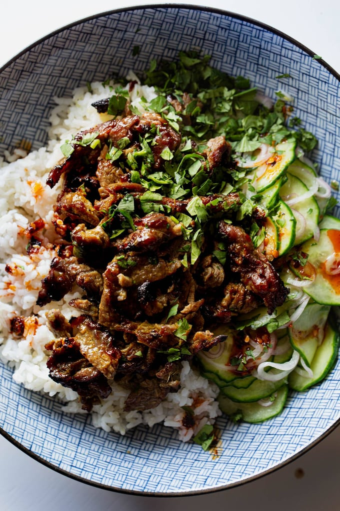

Garlic and Black Pepper Beef Skewers

Description
These beef skewers are bringing all the flavor! Thinly sliced strips of steak browned and caramelized to juicy, sweet perfection.
Ingredients
For the Beef:
- 1.5 lbs. skirt steak, cut against the grain into very thin strips
- 1 tablespoon soy sauce
- 1 tablespoon garlic paste
- 1 tablespoon ginger paste
- 1 teaspoon coarse kosher salt
- 1 teaspoon granulated sugar
- 1 teaspoon curry powder
- freshly cracked black pepper
For Serving:
- fish sauce, lime juice, and cilantro for topping
- rice
- broccoli, bagged salad, or a quick cucumber salad
>
Home